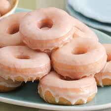

Donuts

A sweet, ring-shaped snack food that's typically deep-fried and made from flour dough
Ingredients:
The dough
- 1 3/4 cups all-purpose flour
- 1 cup granulated sugar
- 3/4 tsp kosher salt
- 1 tsp baking powder
- 1/2 tsp baking soda
- 1 large egg
- 1/2 cup buttermilk
- 1/4 cup flavorless oil
- 1 tsp vanilla extract
- 1/4 cup water
- Sprinkles for decorating
- Glaze
Blood orange glaze
- 3 cups confectioners sugar
- 2 Tbsp honey
- 4 to 5 tablespoons fresh blood orange juice
Steps:
The dough
- preheat the oven to 375 degrees F.
Coat a 12-cavity donut pan with
cooking spray and set aside
- Whisk together the flour, sugar,
salt, baking powder and baking soda
in a large bowl
- Whisk together the egg, buttermilk,
oil, vanilla and water in a medium
bowl
- Whisk the wet mixture into the dry
mixture and stir to combine
- Fill a piping bag with the batter
and pipe the batter into the donut
pans, filling each cavity halfway
- Bake until a toothpick inserted into
a donut comes out clean, about 12 minutes.
Cool in the pan for 5 minutes. Remove
to a rack and cool completely.
- To decorate the donuts, dip them
halfway into the glaze and then
allow excess glaze to drip off.
Sprinkle the tops with sprinkles
The glaze
- Combine the confectioners' sugar,
honey and 4 tablespoons of the juice
in a bowl
- Add more juice little by little until
the mixture is spreadable
- It should be quite thick yet
spreadable.
Return to Top
Retun Home